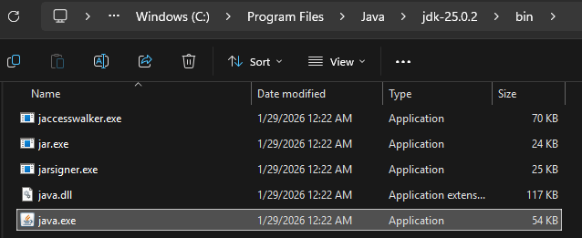
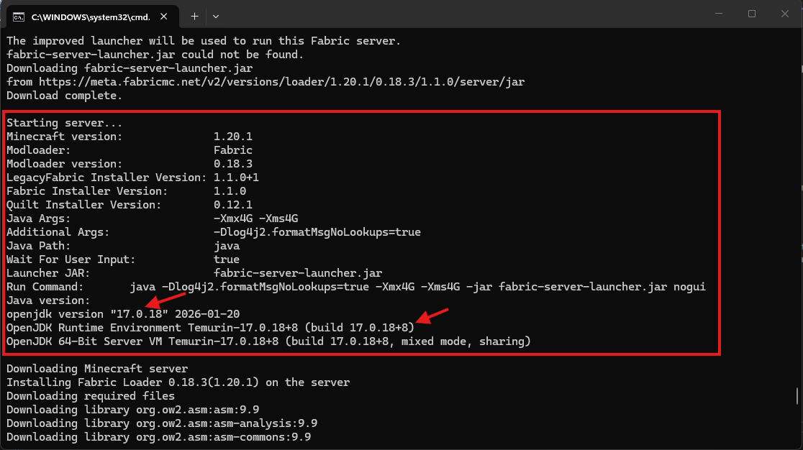
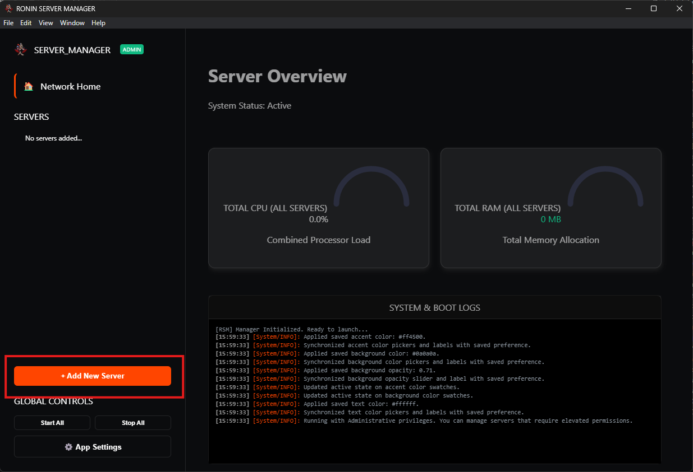
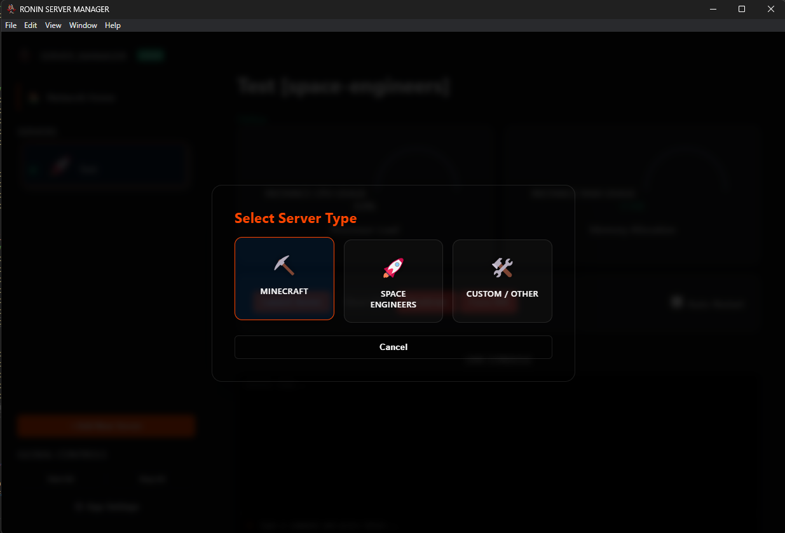

material-pickaxe: Minecraft Server
Java-Based Integration
Minecraft runs via the Java Runtime Environment (JRE). Unlike native executables, RSM interacts with Minecraft by capturing its standard input/output streams directly. This allows for near-instant console responses and direct command injection without the need for an external API.
⚠️ Pre-Configuration Steps
Before adding the Minecraft server to RSM, you must stage the Java environment and the EULA. We also want to ensure we capture the correct Java version and working directory for the server.
- Java Check: Ensure you have the correct JDK installed (Java 17, or 21 is recommended for modern versions). Run
java -versionin a terminal to confirm. - EULA Acceptance: Run your
server.jarmanually once. It will fail and create aeula.txtfile. Open this file and changeeula=falsetoeula=true. - Server Properties: Edit
server.propertiesto set your desired port (Default is25565) and query settings. -
File Location: Identify the following paths before adding the server to RSM:
- Java Executable: Usually located at
C:\Program Files\Java\jdk-21\bin\java.exe(May be different based on your modpack and minecraft version) - Working Directory: The folder containing your
server.jarandmods. This will usually be the server folder you have set up for your Minecraft server.C:\Servers\VanillaPlus
- Java Executable: Usually located at
☕ Identifying your Java Path
- Locate Installation: Usually in
C:\Program Files\Java\. - Find the Bin: Open your version folder (e.g.,
jdk-21) and open thebinfolder. - Copy Path: Right-click
java.exeand select "Copy as path".
{kind=link}
- Run your server manually once.
- Look for a log line like:
Starting Server... - Some will have an exact file path, others will give a generic
Javacall - Copy that exact path into the RSM Path field.

{kind=link}
📂 Required Pathing
-
Java Executable
Points to the
java.exebinary. Do not point to the .jar here....\bin\java.exe -
Working Directory
Critical. The folder where the world and mods live.
C:\Servers\VanillaPlus -
Max RAM (GB)
The maximum memory the server can use. Only change the number part for each in the arguments field, the rest of the syntax should be the same. - For example, if you want to set 4GB of RAM, you would use
-Xmx4Gand-Xms4Gin the arguments field. -
Direct Input
Supported. Unlike SE, Minecraft accepts commands directly via the RSM console without an API password. This way we won't need to set up a separate RCON password for the server, we can just send commands directly from the RSM console.
{kind=link}
{kind=link}
⚙️ Startup Arguments
Since you are using manual arguments in the RSM Wizard, ensure your Arguments field follows this syntax to avoid boot failures:
| Flag | Function |
|---|---|
-Xmx...G |
Sets the maximum memory (e.g., -Xmx4G). |
-Xms...G |
Sets the starting memory (should match Max RAM). |
-jar ... |
Points to your server file (e.g., -jar server.jar). |
nogui |
Required. Disables the default Minecraft GUI window. |
⛏️ Adding to RSM
- Open Manager: Click Add Server and select the Minecraft card.

{kind=link}

{kind=link}
- Fill Fields: Use the Java path and Working Directory identified above. Paste your manual arguments string into the Arguments field.
- Save: Click Save Server. The server will appear in your sidebar with the icon.
- Launch: Select the server and hit Start. RSM will capture the Java stream and begin displaying logs immediately.
Note: Ensure your Working Directory is correct. If the server starts and stops instantly, check that your eula.txt is set to true in that folder.